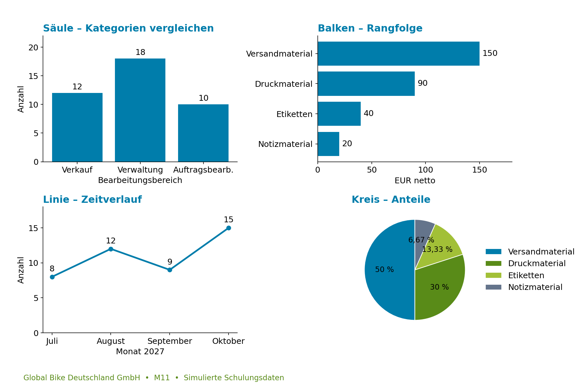

Ü10 – Den richtigen Diagrammtyp auswählen
Global Bike Deutschland GmbH · Verwaltung · Löppt · freiwillig · unbenotet · keine KI
Ausgangssituation
Emma Fuchs benötigt vier unterschiedliche grafische Aussagen für eine interne Abstimmung. Alle Daten sind simulierte Schulungsdaten, keine SAP-Daten oder Hauptfalllösung. Ü12–Ü14 nutzen bewusst dieselbe Kostenbasis für aufeinander aufbauende Qualitätsaufgaben.
Das trainieren Sie
F10; Materialien M11.
Arbeitsdatei
UE10_Arbeitsdatei.xlsx öffnen und Arbeitskopie speichern. Blaue Felder sind Eingaben, grüne Felder vorhandene Formeln. Fehlende Ergebnisse selbst ergänzen.
Arbeitsaufträge
- Untersuchen Sie die vier Blätter und formulieren Sie je eine betriebliche Frage.
- Wählen Sie für Vergleich, Verlauf, Anteile und Rangfolge jeweils einen passenden Diagrammtyp. Begründen Sie die Wahl und nennen Sie eine ungeeignete Alternative.
- Markieren Sie Daten mit Überschriften → Einfügen → passenden 2D-Diagrammtyp wählen. Keine Summenzeilen als Kategorie verwenden.
- Prüfen Sie Achsen, Einheit, Zeitreihenfolge und bei Anteilen das vollständige Ganze. Vermeiden Sie 3D und abgeschnittene Größenachsen.
- Ändern Sie testweise einen Wert und vergleichen Sie die Aussage; stellen Sie ihn wieder her.
Hilfen bei Bedarf


Selbstkontrolle
Freiwillige Vertiefung
Eine zusätzliche plausible Eingabe in einer Testkopie verändern, Ergebnis vorhersagen und prüfen. Keine Pflichtabgabe.
Excel-Arbeitsdatei herunterladen